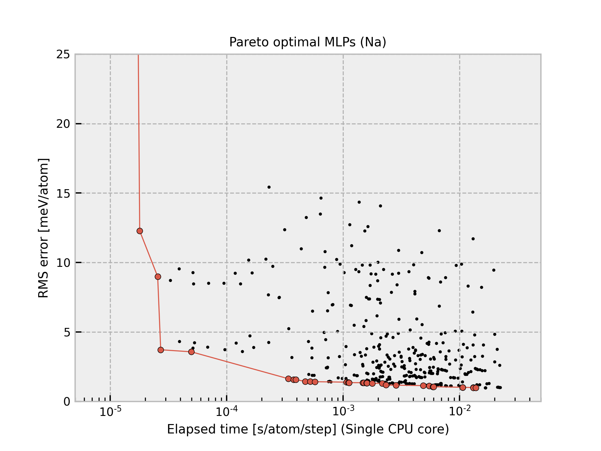
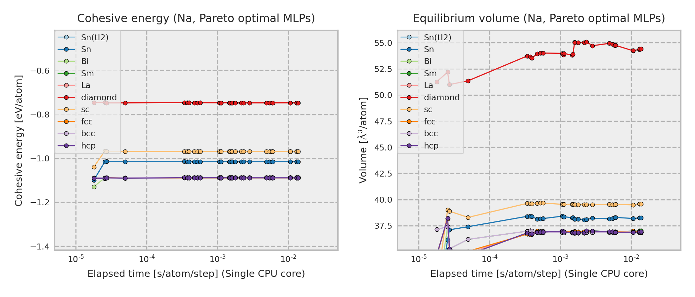

Na-2021-08-04-all-icsd¶
{kind=link}
The current structure dataset comprises 14758 structures generated from unique ICSD prototype structures composed of single elements with zero oxidation state. A more detailed procedure is found in Phys. Rev. B 99, 214108 (2019). The procedure to estimate interatomic potentials from the dataset is found in Phys. Rev. B 99, 214108 (2019) and Phys. Rev. B 102, 174104 (2020).
Improvement from **-dataset-10000-all-icsd
More robust for structures with a small interatomic distance
More robust for structures with a large interatomic distance
More complex potential models are included.
MLPs are estimated without using DFT stress tensors.
MLPs are estimated by using small regression weights for energetically unstable structures.
Predictions using Pareto optimal MLPs
{kind=link}
The cohesive energy and volume are obtained by performing a local structure optimization from the DFT equilibrium structure. In addition, the DFT equilibrium structure is obtained by optimizing a prototype structure included in ICSD, and the prototype is used as the structure legend in the figure. Therefore, the structure type of the converged structure is sometimes different from that shown in the legend even if the potential energy surface predicted by MLP is almost the same as the true one.
The other properties predicted by each Pareto optimal MLP are available from column Predictions in the following table.
Name |
Time [ms] (1core/36cores) |
RMSE [meV/atom]/[eV/A] |
Predictions |
Files |
|---|---|---|---|---|
pair-14 |
0.017 / 0.038 |
30.971 / 0.0525 |
– |
– |
pair-27 |
0.018 / 0.005 |
12.271 / 0.0348 |
– |
– |
pair-15 |
0.026 / 0.039 |
8.9840 / 0.0282 |
||
pair-28 |
0.027 / 0.007 |
3.7172 / 0.0162 |
||
pair-31 |
0.050 / 0.007 |
3.5692 / 0.0159 |
||
gtinv-303 |
0.339 / 0.029 |
1.6329 / 0.0087 |
||
gtinv-175 |
0.376 / 0.031 |
1.5794 / 0.0085 |
||
gtinv-240 |
0.393 / 0.030 |
1.5676 / 0.0084 |
||
gtinv-312 |
0.472 / 0.036 |
1.4422 / 0.0065 |
||
gtinv-190 |
0.523 / 0.038 |
1.4243 / 0.0064 |
||
gtinv-255 |
0.573 / 0.040 |
1.4177 / 0.0064 |
||
gtinv-304 |
1.069 / 0.073 |
1.3848 / 0.0078 |
||
gtinv-176 |
1.108 / 0.075 |
1.3635 / 0.0077 |
||
gtinv-241 |
1.126 / 0.076 |
1.3520 / 0.0077 |
||
gtinv-177 |
1.475 / 0.092 |
1.3444 / 0.0076 |
||
gtinv-242 |
1.506 / 0.092 |
1.3337 / 0.0076 |
||
gtinv-313 |
1.590 / 0.102 |
1.3253 / 0.0065 |
||
gtinv-191 |
1.600 / 0.102 |
1.3169 / 0.0064 |
||
gtinv-256 |
1.780 / 0.109 |
1.3047 / 0.0064 |
||
gtinv-257 |
2.164 / 0.129 |
1.2976 / 0.0063 |
||
gtinv-261 |
2.341 / 0.142 |
1.1777 / 0.0054 |
||
gtinv-262 |
2.839 / 0.166 |
1.1674 / 0.0049 |
||
gtinv-263 |
4.878 / 0.289 |
1.1364 / 0.0052 |
||
gtinv-264 |
5.489 / 0.315 |
1.1166 / 0.0051 |
||
gtinv-221 |
5.913 / 0.339 |
1.0613 / 0.0048 |
||
gtinv-286 |
6.000 / 0.346 |
1.0566 / 0.0048 |
||
gtinv-232 |
10.649 / 0.547 |
1.0160 / 0.0043 |
||
gtinv-297 |
10.655 / 0.543 |
1.0131 / 0.0042 |
||
gtinv-332 |
13.113 / 0.653 |
0.9975 / 0.0050 |
||
gtinv-223 |
13.159 / 0.653 |
0.9825 / 0.0048 |
||
gtinv-288 |
13.824 / 0.659 |
0.9795 / 0.0048 |
Column “Time” shows the time required to compute the energy and forces for 1 MD step and 1 atom, which is estimated from a simulation of 10 runs for a structure with 284 atoms using a workstation with Intel(R) Xeon(R) CPU E5-2695 v4 @ 2.10GHz. Note that the MLPs should be carefully used for extreme structures. The MLPs often return meaningless values for them.
All Pareto optimal MLPs are available
here.